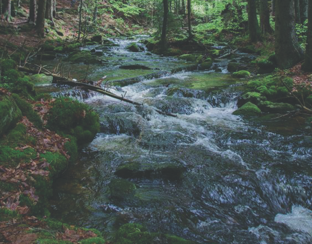

Bicicleta Elétrica ADXTUR
Bicicleta elétrica para Aldeias do Xisto / Projeto em Design II / 2018
A criação de uma bicicleta elétrica aparece no âmbito da cadeira de Projeto em Design II em parceria com as Aldeias do Xisto. A ideia foi criar uma e-bike para explorar o território das várias aldeias, confortável e capaz de obedecer às necessidades dos utilizadores. A palavra que melhor define o nosso conceito é a “fluidez”. O nosso projeto, nomeado de “Ondeia”, pretende refletir a versatilidade e adaptabilidade que associamos ao elemento líquido vital à vida: a água. Esta encontra-se sempre presente no decorrer de qualquer caminho, como um elemento complementar da viagem. A bicicleta “Ondeia” foi pensada para enfrentar desafios, permitindo aos seus utilizadores circular em qualquer tipo de terreno não esquecendo a segurança e o conforto. As propriedades da água foram decisivas na conceção estética da “Ondeia” e evidenciam-se na continuidade das suas linhas ondulantes, associadas ao movimento incessante da água. Estas características conjugam-se harmoniosamente com a funcionalidade da bicicleta, tornando-a apta para a realização de percursos simples ou mais exigentes.
-

-

- 